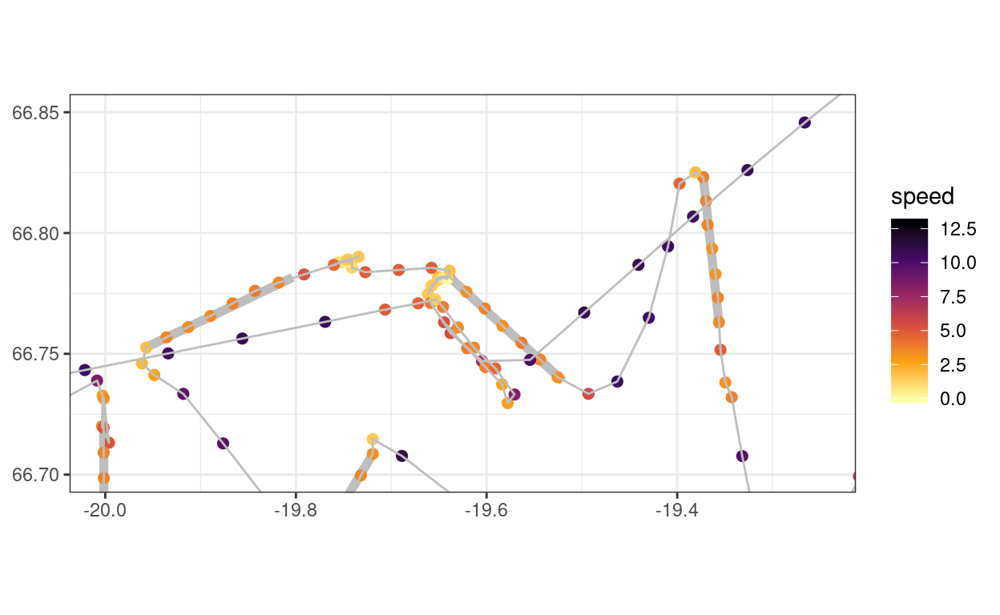
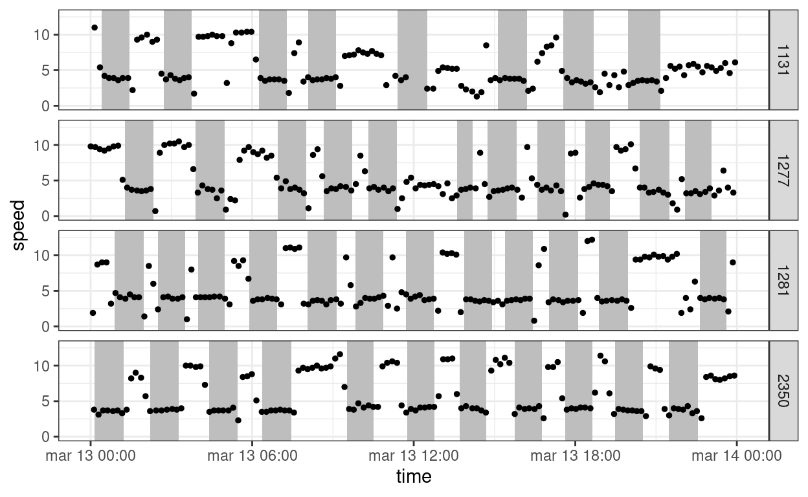
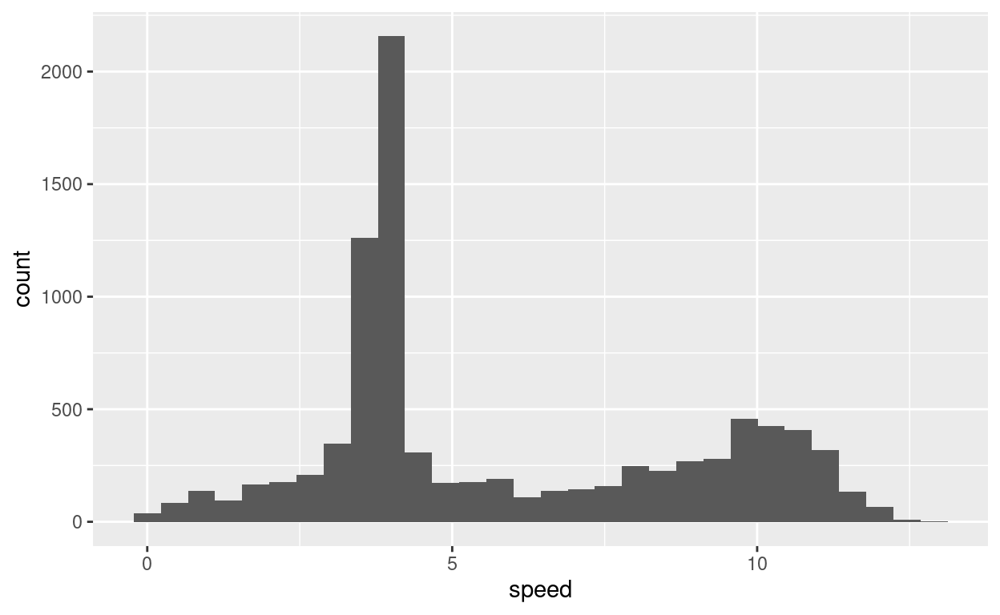
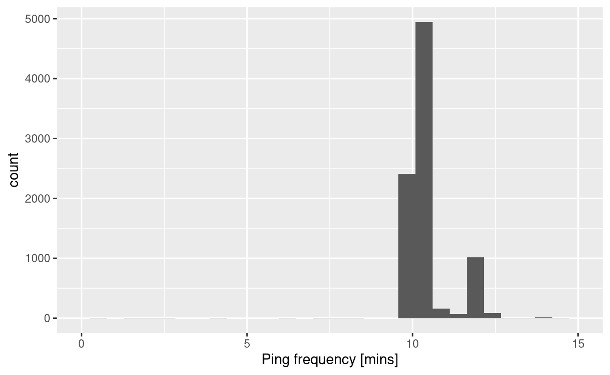
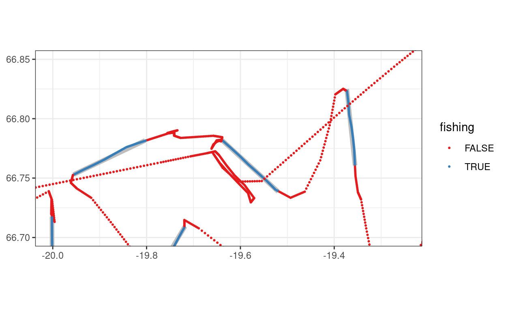
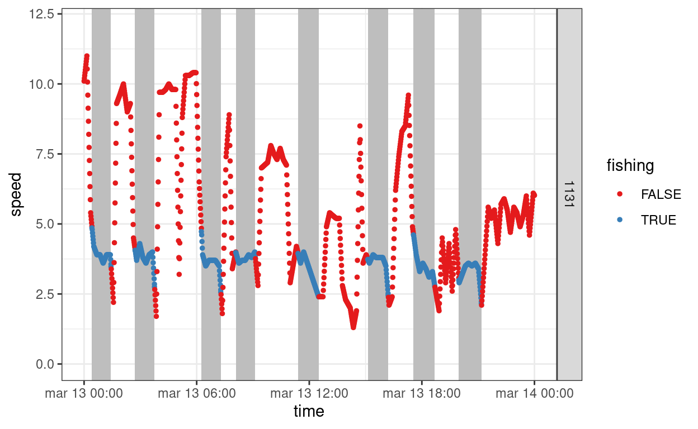

We have two datasets: 1) Logbook data were each fishing haul is a record and has start and end time as well as geographical start and end coordinates. 2) VMS data were each record is spatial point in time. Ideally one should try to attempt to use both time and space to join the data, but here we will only use the time dimension. In essence the problem to solve is matching time (vms-interval problem to solve.
library(lubridate)
library(tidyverse)
library(sf)
library(mapdeck)The dataset are 8918 AIS/VMS records of four vessels that participated in the Icelandic spring survey in 2019. The variables are as follows:
| Option | Description |
|------------------|------------------------------------------------|
| `rows.print` | Maximum rows to print per page. |
| `max.print` | Maximum rows in the table (defaults to 1000). |
| `cols.print` | Maximum columns in the table (defaults to 10). |
| `rownames.print` | Print row names as part of the table. |Importing the data into R:
d <-
read_csv("ftp://ftp.hafro.is/pub/data/csv/is_smb_vms2019.csv")The example datasets are the Icelandic spring groundfish survey from 2019, where four different vessels participated.
Lets use the Icelandic survey data as our logbook data and the vms-data from the vessels that participated in the 2019 survey.
vms <-
read_csv("ftp://ftp.hafro.is/pub/data/csv/is_smb_vms2019.csv") %>%
arrange(vid, time)
lgs <-
read_csv("ftp://ftp.hafro.is/pub/data/csv/is_smb.csv") %>%
filter(year == 2019) %>%
select(id, vid, t1, t2, lon1, lat1, lon2, lat2)Lets first look at the spatial dimensions, here zooming into an area:
mapdeck() %>%
add_scatterplot(data = vms,
lon = "lon",
lat = "lat",
fill_colour = "speed",
palette = "inferno")
ggplot() +
theme_bw() +
geom_segment(data = lgs,
aes(lon1, lat1,
xend = lon2, yend = lat2),
colour = "grey",
lwd = 2) +
geom_point(data = vms,
aes(lon, lat, colour = speed),
size = 2) +
scale_color_viridis_c(option = "B", direction = -1) +
geom_path(data = vms,
aes(lon, lat, group = vid),
colour = "grey") +
coord_quickmap(xlim = c(-20, -19.25),
ylim = c(66.7, 66.85)) +
labs(x = NULL, y = NULL)
The plot shows:
On a fine space-scale we observe that the spatial points in the vms and start and end points of a tow do not intersect.
Both datasets also have a time dimension, here we zoom into one day of the survey:
ggplot() +
theme_bw() +
geom_rect(data = lgs,
aes(xmin = t1, xmax = t2),
ymin = -Inf, ymax = Inf,
fill = "grey") +
geom_point(data = vms, aes(time, speed), size = 1) +
facet_grid(vid ~ .) +
scale_x_datetime(limits = c(ymd_hms("2019-03-13 00:00:00"),
ymd_hms("2019-03-14 00:00:00")))
The plot shows:
On a finer time-scale we observe that the time in the vms and the time in the do not intersect.
ggplot() +
geom_histogram(data = vms,
aes(speed))
vms %>%
group_by(vid) %>%
mutate(hz = time - lag(time),
hz = as.numeric(hz) / 60) %>%
ggplot() +
geom_histogram(aes(hz)) +
scale_x_continuous(name = "Ping frequency [mins]",
lim = c(0, 15))
Lets just take one vessel for now, the thinking being that at a later time one can scale the code up to deal with all the vessels. The steps we will take are:
VID <- 1131
# Step 1
smb2 <-
lgs %>%
filter(vid == VID) %>%
select(vid, id, t1, t2) %>%
pivot_longer(cols = c(t1, t2),
names_to = "startend",
values_to = "time") %>%
arrange(vid, time) %>%
mutate(year = year(time))
# Step 2
vms2 <-
vms %>%
filter(vid == VID) %>%
# make sure we have unique records
distinct() %>%
mutate(time = round_date(time, "minutes"))
time <-
seq(from = min(vms2$time),
to = max(vms2$time),
by = "1 min")
g <-
# Step 3, using vector created above
tibble(time = time,
vid = VID) %>%
# Step 4
left_join(vms2 %>% mutate(meas = TRUE),
by = c("time", "vid")) %>%
# Step 5
group_by(vid) %>%
mutate(y = 1:n()) %>%
mutate(lon = approx(y, lon, y, method = "linear", rule = 1, f = 0, ties = mean)$y,
lat = approx(y, lat, y, method = "linear", rule = 1, f = 0, ties = mean)$y,
speed = approx(y, speed, y, method = "linear", rule = 1, f = 0, ties = mean)$y,
heading = approx(y, heading, y, method = "linear", rule = 1, f = 0, ties = mean)$y) %>%
# Step 6
bind_rows(smb2) %>%
arrange(vid, time) %>%
# Step 7
mutate(x = case_when(startend == "t1" ~ 1,
startend == "t2" ~ -1,
TRUE ~ 0)) %>%
mutate(x = cumsum(x)) %>%
# fill "does too much", ...
fill(id) %>%
# hence we need do this:
mutate(id = ifelse(x == 1 | startend == "t2", id, NA_integer_)) %>%
# Step 8
mutate(y = 1:n(),
lon = approx(y, lon, y, method = "linear", rule = 1, f = 0, ties = mean)$y,
lat = approx(y, lat, y, method = "linear", rule = 1, f = 0, ties = mean)$y,
speed = approx(y, speed, y, method = "linear", rule = 1, f = 0, ties = mean)$y,
heading = approx(y, heading, y, method = "linear", rule = 1, f = 0, ties = mean)$y) %>%
mutate(fishing = ifelse(!is.na(id), TRUE, FALSE))Lets take a visual peek at what we have done:
ggplot() +
theme_bw() +
geom_segment(data = lgs %>% filter(vid == VID),
aes(lon1, lat1,
xend = lon2, yend = lat2),
colour = "grey",
lwd = 2) +
geom_point(data = g,
aes(lon, lat, colour = fishing),
size = 0.4) +
scale_color_brewer(palette = "Set1") +
coord_quickmap(xlim = c(-20, -19.25),
ylim = c(66.7, 66.85)) +
labs(x = NULL, y = NULL)
ggplot() +
theme_bw() +
geom_rect(data = lgs %>% filter(vid == VID),
aes(xmin = t1, xmax = t2),
ymin = -Inf, ymax = Inf,
fill = "grey") +
geom_point(data = g, aes(time, speed, colour = fishing), size = 1) +
scale_color_brewer(palette = "Set1") +
facet_grid(vid ~ .) +
scale_x_datetime(limits = c(ymd_hms("2019-03-13 00:00:00"),
ymd_hms("2019-03-14 00:00:00")))